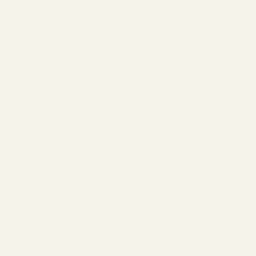

作品集、幻灯片站、热榜聚合站、社区站与卡网——都是我从需求到部署自己走完的。每一条都写清它解决谁的什么问题。
「做完」和「能用」之间隔着部署、域名、移动端适配。多数人的作品停在本地跑得起来，交付出去往往还得再走一轮。
每个站点我自己走完：需求 → 设计 → 前端 → 部署 → 域名 → 手机端自查 → 上线后回归。
这些站点是我自己做的，流量和收入规模都还小。我能证明的是从需求到上线这条链我能自己走完，以及部署环境的坑我踩过哪些。
看岗位、发简历、或者只是想找个人聊聊 AI 怎么落进业务里，都欢迎找我。
